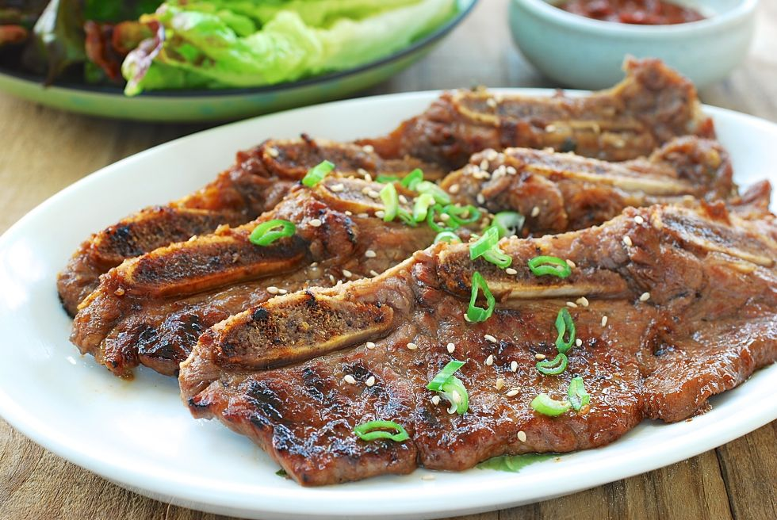

Back to Homepage

Description
A Korean dish using barbecued beef short ribs. Galbit means "ribs" in Korean, and is usually seen in California as LA galbi.
Ingredients (serves 4-6)
- 3.5lb of LA style beef short ribs
- 1/3 cup of soy sauce
- 1/4 cup of honey
- 2 tbsp of sesame oil
- 6 cloves of minced garlic
- 1 cup of H-Mart beef short rib marinade
- 1 bunch of green onions
Marinade
- Have a big enough bowl ready to mix and marinade the meat.
- Mix all the ingredients together into the bowl
- Let the marinade sit in the fridge for at least 20 mins (overnight is best)
Cooking
- Prepare a non-stick pan on low to medium heat (Using non-stick is just easier for clean-up)
- "No color, no flavor". Cook until you see the caramelizing, Mallaird Reaction is a complex process and is the reaction between reducing sugars and proteins by the impact of heat.
- Once you see it browning, take the galbi off the heat and let it rest.
- Chop up some green onions and garnish to finish!